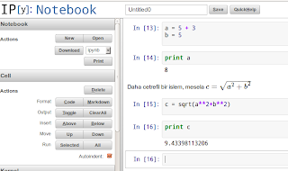

ipython
Etkilesimli / anlik / canli veri analizi icin cok faydali bir program: ipython. Bu program aslinda bir shell, yani aynen bash, zsh gibi fakat ozellikle Python tasarlanmis bir shell, bu sebeple mesela komut satirinda import yapilabilir, bir Python script dosyasi icine yazilabilecek her sey satir satir bu shell icinde isletilebilir.
ipython niye faydalidir? Diyelim ki buyuk veri setleri ile is yapiyoruz, read_csv ile dosya okuduk, sonra Scikits Learn'deki KMeans ile bir kumeleme islemi yaptik. 100 bin civari satirlarin ustunde artik bu islemler uzun zaman almaya baslar. Fakat belki yapmak istedigimiz kumelemeyi bir kere yapip, sonra onun sonuclarini farkli sekillerde analiz etmek.. Eger her seyi surekli python dosya.py gibi isletiyorsak, script islemeyi bitirince hafizadaki her sey kaybolacaktir, uzun suren islemleri her seferinde tekrar bastan isletmek zorunda kaliriz [1]. Iste ipython burada faydali olur, KMeans shell icinde isletilir, ve shell bitmeden ayakta durdugu icin, KMeans'in sonuclari hala hafizada durmaktadir. Artik bu shell icinde istenen analiz yapilir. Ayrica shell icinde direk hata ayiklayici (debugger) kullanabilme, hata cikinca daha rahat analiz gibi bir suru guzel ozelligi vardir. Neyse,
$ ipython
ile baslatinca shell'e girilir (yuzde isaretini shell isareti gibi kabul edelim)
%run [dosya.py]
ile dosya.py icindeki Python komutlari sanki elle % sonrasi yaziliyormus gibi isletilebilir, Unix shell'deki "kaynaktan isletme (sourcing)" kavramina benziyor, yani
. [dosya.sh]
gibi. Matplotlib ile daha entegre sekilde baslatmak icin
ipython --pylab
o zaman ayrica matplotlib import etmeye gerek kalmaz, plot komutu aninda cizimi yapar, normalde bilindigi gibi plt.show() sonrasi normal Python script blok edecekti.
% reset
ile hafiza icerigi temizlenir, soru sorulmadan bu is yapilsin istersek
% reset -f
Not Defteri
Bir dizi ipython islemini tarayici icinden yapabilmek, ve hem kodsal, hem de prezentasyon amaciyla bunlari paylasmak icin ipython "not defteri" uygulamasi ilginc. Kurmak icin sudo apt-get install ipython-notebook. Baslatmak icin
ipython notebook --pylab=inline
Bu bir servis baslatacak, genellikle port 8888 uzerinde isler. Bu porta baglaninca bir ipython not defterine girmis oluruz. Not defteri aynen ipython shell gibi etkilesimli (interactive) bir ortamdir, ama terminal penceresindeki shell yerine bir HTML sayfasindayiz. Tablolar, grafikler aninda orada gosterilir mesela.. Daha guzel tarafi tum bu etkilesimin dosyaya kaydedilip paylasilabilmesi; boylece paylasilan seyler baskalari tarafindan onlarin notebook uygulamasi icine yuklenebilir, boylece diger kisiler de ayni ipython islem zincirini gorurler, isterlerse kodla onlar da oynayabilirler, orasini burasini degistirip sonuclarin farklarina bakabilirler mesela.
Son zamanlarda konferanslarda bu moda haline geldi, ipython not defteri aciliyor, yeni yapilmis (konferansta anlatilan) her ne var ise, takir takir not defterine yuklenip islemesi gosteriliyor, sonra konusma sonrasi bu etkilesim zinciri dosyaya kaydediliyor ve Web sitesinden herkesle paylasiliyor.
Not defterinde hucreler var, bu hucrelere Python komutlari girilir, onlari "isletmek" icin Shift+Enter'a basilir. Hucrelere geri donerek icerikleri degistirilebilir (bu shell ortamina gore bir ilerleme) ve tekrar Shift+Enter yeni sonuclari verir (o hucrede). Eger bir degisikligin tum not defterine yansimasini istersek, solda "All" tusu ile her seyi isletebiliriz.
Not defteri icinde LaTeX kullanmak mumkundur. Kod yazilan hucrede iken solda "Markdown" secerseniz, yazdiklarini metin olarak kabul edilir ve iki $ $ isareti arasindaki her sey LaTeX komutu olarak algilanir, ve Shift + Enter sonrasi aninda grafiksel olarak gosterilir. Bu tek kelimeyle muthis bir ozellik, bilimsel hatta egitimsel icerik paylasma konusunda cok faydali. Bu teknolojiyle interaktif bilimsel kitaplar yazilabilir, gidisat o yonde.
Eger Ubuntu icinde masaustunde mesela dizinler arasinda gorsel olarak
gezinirken icinde oldugunuz dizinde isleyen bir not defter servisi
baslatmak istersek, $HOME altinda .gnome2/nautilus-scripts dizinine
gidip mesela notebook-server adinda bir dosya yaratiriz, bu dosya
icine
#!/bin/sh
cd `echo $NAUTILUS_SCRIPT_CURRENT_URI | sed -e 's/file:\/\///g'`
gnome-terminal -e 'ipython notebook --pylab=inline --no-browser '
Dosya uzerinde chmod 755 yapariz (kosturulabilir dosya olur yani), ve artik Nautilus ile dizinler icinde gezinirken, farede sag tiklama ve Scripts | notebook-server ile o dizinde bir servis baslatiriz.
Bu arada ipython not defteri ornegini servis tarafini yerel sahsi makinamizda bir servis uzerinden islettik, ama bu servis aslinda Internet'te herhangi bir yerde isliyor da olabilir. Demek ki birinden bir HTML not defteri alip, onu Amazon EC2 gibi bir servisten de ekrana basiyor olabilirdik. Hatta herkesin erisebilecegi bu tur bir servis uzerinden bilimsel yayinlarin paylasilmasi mumkun - hakikaten de bakiyoruz,
http://nbviewer.ipython.org/
gibi bir servis baslamis. Bunlar cok guzel gelismeler.
[1] Tabii ki sonuclari script icinde bir yere kaydedip sonra baska script icinden geri alabiliriz, fakat bunlar hep ek kodlama gerektirir.

Yukarı